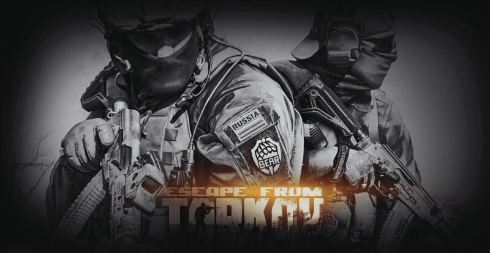
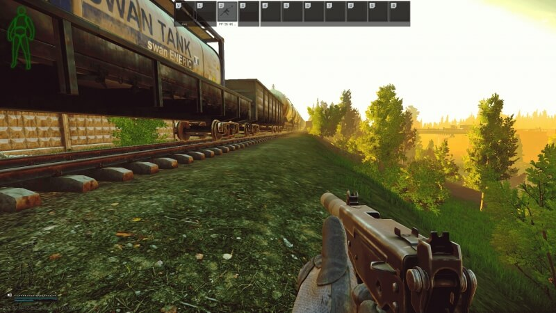
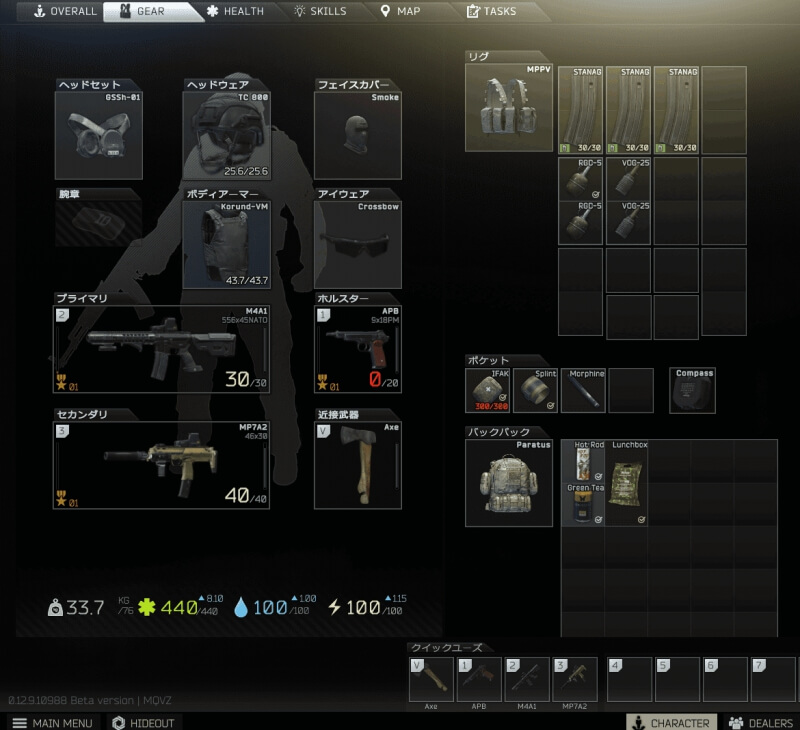
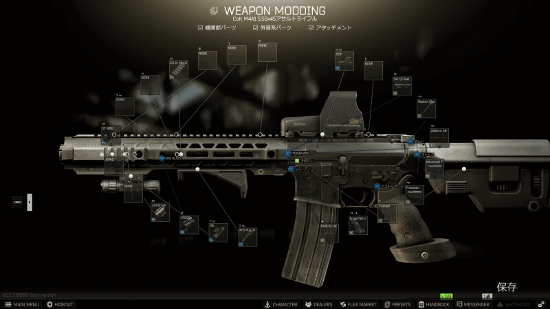

Escape from Tarkov公式サイト:https://www.escapefromtarkov.com
皆さんは「Escape from Tarkov（通称:ETF,タルコフ）」というゲームはご存じでしょうか？
巷では有名なゲームなのですがまだご存じない方もおおいのではないでしょうか。有名ゲーム配信者の方プレイしていることがありますね。
今回はタルコフとはどんなゲームなのか解説していきます。タルコフの醍醐味やゲーム性を知ってもらえたら幸いです。
「Escape from Tarkov」はBattleftate Gamesによって2017年に制作されたファーストパーソンシューティングゲーム（所謂 fps)です。
プレイヤーからは「タルコフ」や「EFT」と呼ばれています。
仮想地域ノルヴィンスクの都市「タルコフ」が舞台になっており、プレイヤーは時間内に脱出を目指すゲームになっています。

今作は普通のFPSゲームとは違い、PvPvEになっています。プレイヤー VSプレイヤー VS NPCですね.
ゲームシステムが現実よりで空腹や脱水症状があります。
銃で撃たれれば撃たれた部位が出血するので止血しないと死亡してしまいます。
出血には軽度の出血と重度の出血があり、止血するためには対応する医療アイテムを使用する必要があります。
そしてタルコフは頭を撃たれると一撃で死んでしまいます。
このような難しいゲームシステムから鬼畜FPSハードコアFPS」というジャンルに分類されます。
このゲームの特徴の一つであり、驚いたことが装備の数多すぎる！ということです。


この武器につけられるアタッチメントのでもすごい数があります。
もちろんアタッチメントによって性能が違うので反動を少なくする組み合わせやエルゴノミクス重視のカスタムなど自分の好みの性能にすることができます。
色のついたアタッチメントもあるので,見た目重視でカスタマイズするのもグッドです。
購入することができるエディションの値段と購入特典は以下のとおりです。
| エディション | 料金 | 特典 |
|---|---|---|
| STANDARD edition | 44.99＄ | ・クローズドベータへの即時アクセス ・製品版の先行ダウンロード ・標準サイズの収納スペース (10×28 マス) ・ゲームスタート時のボーナス装備：34アイテム |
| LEFTBEHIND edition | 74.99＄ | ・クローズドベータへの即時アクセス ・製品版の先行ダウンロード ・大きなサイズの収納スペース (10×38 マス) ・ゲームスタート時のボーナス装備：40アイテム |
| PREPARE FOR ESCAPE edition | 99.99＄ | ・クローズドベータへの即時アクセス ・製品版の先行ダウンロード ・非常に大きな収納スペース (10×48 マス) ・開始時点から全トレーダーと良好な関係性 ・ゲームスタート時のボーナス装備：54アイテム |
| EDGE OF DARKNESS LIMITED edition | 139.99＄ | ・クローズドベータへの即時アクセス ・製品版の先行ダウンロード ・最大サイズの収納スペース (10×68 マス) ・ゲーム内でのユニークなID表示 ・開始時点から全トレーダーと良好な関係性 ・全てのDLCへのアクセス権 (シーズンパス) ・ゲームスタート時のボーナス装備：66アイテム |
とりあえず遊んでみたいという方は「STANDARD edition」で問題ないと思いますが、収納スペースの大きさやトレーダーとの関係性はゲームを進めるうえで重要な要素になります。
エディションについては後からアップグレードも可能なので最初にどのエディションを選択しても問題ありません。
タルコフではこの記事で紹介したこと以外にも様々なことがあります。FPSとRPG要素があるゲームでやりこみ要素は無限大にあります。
タルコフをプレイするとわからないことばかりで大変だと思います。
ですが慣れてくるととても面白いゲームなので気になっている方がいればぜひプレイしてみてください！